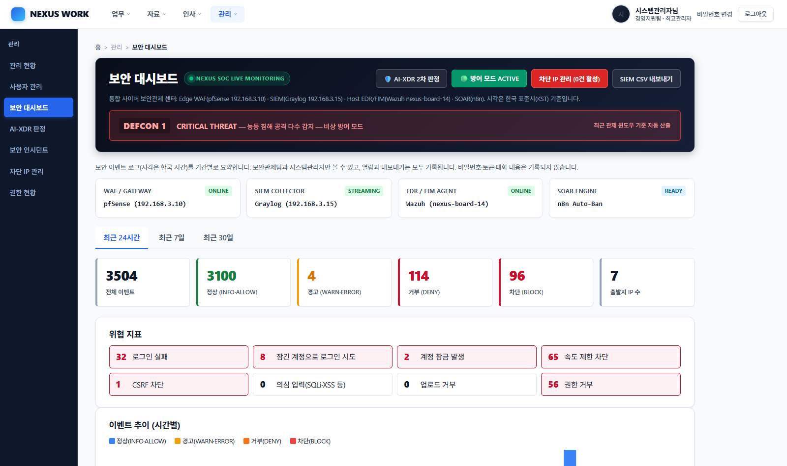

Enterprise SecOps
CORE 01
NEXUS WORK
팀 4명 · 부팀장 · 웹/DB 하드닝·포털 개발 (기여도 40%)사내 포털(ERP·그룹웨어·AI 어시스턴트)에 AI 프롬프트 인젝션 방어, L7 신뢰 프록시 헤더 보존, DB 컬럼 레벨 최소권한(PoLP), SSE 실시간 보안 감사 로그 스트리밍을 통합한 엔터프라이즈 하드닝 솔루션입니다. 저는 웹·DB 하드닝과 포털 개발을 맡았고, pfSense 경계 방어·Graylog/Wazuh 탐지·n8n 자동화·공격 테스트는 팀원이 담당했습니다.
자체 방어 점검
18항목 통과
프록시 IP
실제 IP 복구
DB 격리
3307 Loopback
실시간 연동
SSE + n8n
Challenge
pfSense NAT 경유 시 클라이언트 실제 IP가 방화벽 루프백 IP로 왜곡되어 SOC 감사 로그 신뢰성 상실 및 오차단 위험 발생
Solution
Waitress WSGI ProxyFix 미들웨어에서 내부망 프록시 CIDR 대역 화이트리스트 검증을 적용하여 IP 스푸핑 공격을 방어하고 출발지 실제 IP를 정확히 기록하도록 복구
🔍 아키텍처 흐름 및 DB 최소권한 격리 코드 보기
# L7 리버스 프록시 헤더 무결성 복구 (Werkzeug ProxyFix)
from werkzeug.middleware.proxy_fix import ProxyFix
# 신뢰 프록시 1-Hop 명시 및 악의적 X-Forwarded-For 조작 방어
app.wsgi_app = ProxyFix(app.wsgi_app, x_for=1, x_proto=1, x_host=1)
# n8n SOAR 전용 DB 계정: 침해 차단 컬럼에만 최소 권한 부여
# GRANT UPDATE (is_blocked, blocked_at) ON nexus_corp.users TO 'n8n_soar'@'10.0.2.%';